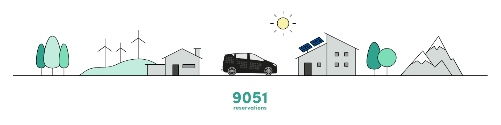

Du début jusqu'à nos jours
Leur but est de devenir une mobilité globale et fournisseur en énergie dans ces 10 ans afin de réduire considérablement les émissionsde CO2 dans le but de protéger les ressources et l'environnement.
2012
Tout part d'un appel entre Jona et Laurin en octobre 2012 parlant du gaspillage du pétrole utilisé par les automobiles, avions, bâteaux... Bien qu'il y ait des solutions alternatives existantes, ils se sont tout de même décidés à chercher une autre réponse face à la "surconsommation" de l'essence.
Ils voulaient prouver au monde qu'il est possible de fusionner les énergies renouvables avec les moyens de locomotion. A l'exemple de l'énergie solaire, elle peut être une issue pour conserver les ressources de la Terre telles que le pétrole et donc protéger notre environnement, notre planète. Ainsi, jour et nuit, ils ont travaillé assidûment sur un prototype de voiture dans le garage de Jona où on lui intégrait des cellules photovoltaïques. Grâce à ces dernières, le modèle a pu avancé de quelques mètres avec de l'énergie solaire.
2016
En Janvier 2016, Sono Motors a vu le jour avec une nouvelle équipière Navina. Elle est celle qui a mis en avant la start-up : son nom et son logo.

Grâce à un financement participatif lancé par un des trois membres, Laurin, ils ont réussi à récolter plus de 825.000 euros grâce aux donnations du monde entier !
2017
Suite à cela, l'équipe s'est agrandit, de nouveaux prototypes ont pu être testés. Au final, un an plus tard en Juillet 2017, un évènement a été organisé pour présenter la voiture innovatrice Sion. Près de 700 personnes furent présents : des médias, des curieux, des politiciens, des supporters.
Leur tout premier tour d'essais a commencé au milieu du mois d'Août qui a duré trois mois ! Durant ce séjour, leur mission principale était d'utiliser le véhicule Sion pour sensibilier les populations d'Europe sur la mobilité durable (ou l'écomobilité), c'est-à-dire le déplacement par l'utilisation des énergies renouvables.
2018
Une deuxième tournée d'essais du Sion début 2018 a été effectué encore une fois en Europe passant par l'Allemagne, l'Italie, la Suisse, l'Autriche et la Nouvelle-Zélande.
Le 9 Mai, Sono Motors annonce le début d'un contrat important pour le développement et la fabrication d'un système de batterie pour la voiture solaire Sion avec le fournisseur automobile allemand ElringKlinger.
Un mois plus tard, ils ont le plaisir d'annoncer la présence de projecteurs LED sur notre véhicule en partenariat avec la société Automotive Solutions Germany GmbH (ASG).
Aujourd'hui, la compagnie Sono Motors compte plus de 9.000 réservations pour leur véhicule solaire 100% électrique qui est prévue en vente fin 2019 avec 200.000 exemplaires.
La start-up tient à remercier tout le monde pour le soutien accordé. Sono Motors est basé sur l'idée de la communauté souhaitant polluer moins et trouver une meilleure utilisation des énergies renouvables.
Le Sion est le début de la mobilité de l'avenir.